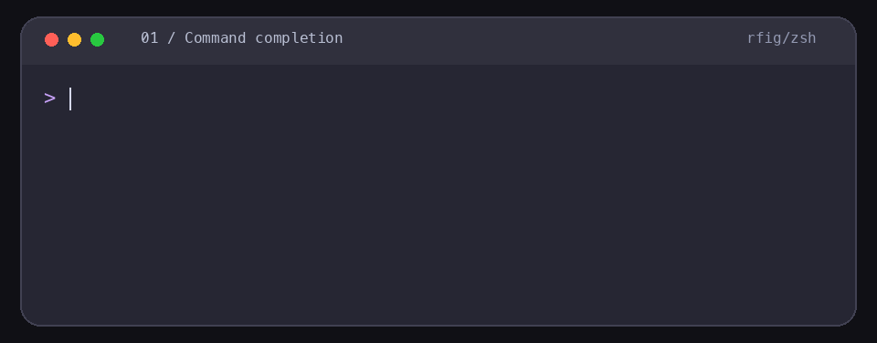

输入时，就有下一步。
候选在提示符下方即时出现。方向键浏览，右箭头插入；Enter 始终执行当前输入的命令。
为 macOS zsh 而做
命令还没打完，下一步已经出现。rfig 在当前提示符下展示补全候选，让你少记参数、少按 Tab，更顺畅地完成每一步。
LIVE IN YOUR TERMINAL
无需切换窗口，也无需记住所有子命令。选中候选后继续输入，下一层自然出现。

↗ 根据当前会话的补全定义显示候选，Git 分支与路径随工作目录变化。
BUILT FOR FLOW
把熟悉的终端留给你，把繁琐的记忆工作交给 rfig。
候选在提示符下方即时出现。方向键浏览，右箭头插入；Enter 始终执行当前输入的命令。
优先使用当前 zsh 的补全定义，也能复用本机的 zsh、Fish、Bash 补全脚本与命令帮助信息。
选择与执行记录留在本机。常用候选靠前显示，其他选项仍然可以正常选择。
HOW IT WORKS
rfig 扫描本机命令和补全定义，后台逐个分析尚缺少规则的工具。无需预装一整套固定的命令库。
选择 Homebrew、预编译包或源码安装。
扫描命令并写入 zsh 集成，后台继续补齐候选。
输入命令，候选自然出现在光标下方。
GET STARTED
当前版本支持 macOS zsh。选择适合你的安装方式；其他 Shell 的交互集成仍在计划中。
brew install tamia6/tap/rfig
rfig setup安装后打开新的 zsh 终端即可使用。